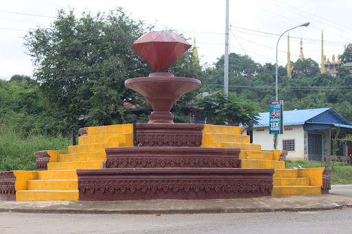

 ប៉ៃលិន ជាខេត្តមួយឋិតនៅជ្រុងខាងជើងនៃជួរភ្នំក្រវាញ ត្រូវជាភាគខាងលិចនៃព្រះរាជាណាចក្រកម្ពុជា មានព្រំប្រទល់ជាប់ជាមួយប្រទេសថៃ។ ខេត្តនេះព័ទ្ធជុំវិញដោយខេត្តបាត់ដំបង និង ត្រូវបានផ្ដាច់ចេញពីខេត្តបាត់ដំបង ឱ្យក្លាយជាតំបន់រដ្ឋបាលដាច់ដោយឡែក បន្ទាប់ពីការចុះចូលរបស់ក្រុមលោកអៀង សារី នៅឆ្នាំ ១៩៩៦។ ប៉ៃលិនត្រូវបានពិភពលោកស្គាល់ថា ជាជម្រកចុងក្រោយនៃពួកខ្មែរក្រហម ដែលឋិតនៅក្រោមការគ្រប់គ្រងរបស់ពួកគេ បន្ទាប់ពីបានចាញ់សង្គ្រាម នៅឆ្នាំ ១៩៧៩ និង ដើរតួជា រដ្ឋធានីនៃ រដ្ឋាភិបាលបណ្ដោះអាសន្ននៃការរួបរួមជាតិ និង សង្គ្រោះជាតិកម្ពុជា ។ ខេត្តនេះគឺជាខេត្តដែលស្ថិតនៅក្រោមអាណាចក្រខ្មែរដ៏មានឥទ្ធិពល ប៉ៃលិនត្រូវបានដណ្តើមកាន់កាប់នៅឆ្នាំ១៥៥៨ ដោយពួកកងទ័ពភូមា ហើយក្រោយមកបានគ្រប់គ្រងដោយសៀមរហូតដល់ឆ្នាំ១៩០៧ និងម្តងទៀតពីឆ្នាំ១៩៤១ ដល់១៩៤៦ (កម្ពុជាក្រោមការត្រួតត្រារបស់ជប៉ុន) នៅពេលដែលខេត្តប៉ៃលិនត្រូវបានប្រគល់មកអោយកម្ពុជាវិញ។ នៅថ្ងៃទី ២២ ធ្នូ ២០០៨ ព្រះបាទនរោត្តម សីហមុនី បានចុះព្រះហស្ថលេខា លើរាជក្រឹត្យមួយ ដើម្បីផ្លាស់ប្ដូរ ក្រុងកែប ក្រុងប៉ៃលិន និង ក្រុងព្រះសីហនុ ឱ្យទៅជាខេត្ត ព្រមទាំងកែតម្រូវព្រំប្រទល់ខេត្តផ្សេងៗទៀតផងដែរ។[២] ប្រជាជននៅទីនោះភាគច្រើនជាកសិករ មានដាំដំណាំ ជាច្រើន ប្រភេទដូចជា ពោត ដំឡូង ។ដំណាំដែលទទួលផលល្អ ជាងគេ ហើយនាំចេញច្រើនគឺ ពោត។ ទន្ទឹមនឹងដំណាំទាំងនេះ មានដាំផ្លែឈើហូបផ្លែ មាន ដូចជា ស្វាយ ចេក សាវម៉ាវ ធុរ៉េន មង្ឃុត ជាពិសេស គឺ ក្ងែន ជាផ្លែឈើមួយប្រភេទ ដែលដុះនៅតែតំបន់ ប៉ៃលិន ហើយក៏មានការដាំបន្តហើយនៅតាមបណ្ដា ខេត្តនានា។ ក្ងែន មិនខុសពី មៀនទេ ប៉ុន្តែវាមិនផ្អែមដូចមៀនទេ ហើយវាមានសាច់ច្រើនជាងមៀន។ ការរស់នៅរបស់ប្រជាជនគឺ ពួកគេចេះស្រឡាញ់គ្នាទៅវិញទៅមក ហើយបើមានកម្មវិធី បុណ្យទានផ្សេងៗ គេជួយគ្នាទៅវិញទៅមក ប្រកបដោយការយោគយល់។តាមអ្នកស្រុកឲ្យការណ៍ថាពាក្យ" ប៉ៃលិន" នេះក្លាយមកពីពាក្យ "ភេលេង" ព្រោះមាននិទានរឿងដើមបញ្ជាក់ផងថាៈ កាលនោះ "នៅសតវត្សទី១៩ មានអ្នកប្រមាញ់ដេញ តាមដានសត្វព្រៃចេះតែឆ្ងាយទៅៗ រហូតដល់ភូមិភាគប៉ៃលិនសព្វថៃ្ងនេះដែលគ្រានោះ នៅជាព្រៃស្រោង មានវាលចន្លោះខ្លះតែត្រង់ប្រឡាយទឹកដែលហៅថា " អូរ " មាន អូរទុងជាដើម។ កែ្បរមាត់អូរនេះអ្នកប្រមាញ់បានប្រទះឃើញសត្វភេកំពុងហែលទឹកលុះឃើញ មនុស្សមកដល់ភេក៏រត់ទៅ ។ អ្នកប្រមាញ់ចូលទៅមើលត្រង់កនែ្លង ភេប្រែឡងគ្នានោះលុះឃើញដុំថ្មតូចៗ មានពន្លឺផេ្លកៗក៏នាំគ្នារើសយកម្នាក់មួយដុំទុកយកទៅ បង្ហាញញាតិមិត្តឯស្រុកខ្លួនវិញ។ លុះទៅដល់ស្រុកមានអ្នកស្រុកនោះ " តាមនិយាយថាពួកកូឡាដែលមករស់នៅ ក្នុងខេត្តចន្ជប៊ុន ស្រុកសៀម " ស្គាល់ថាថ្មនេះមានតមៃ្លគេក៏យកទៅវាយ បំបែករួចចៃ្នជាត្បូងឡើង ក៏ឃើញថាមានទឹកល្អ ។ កាល បើដូចេ្នះគេក៏នាំគ្នាទៅសួរទិញពីពួកប្រមាញ់នោះទៀត ។ ពួកប្រមាញ់យល់ថាជាផ្លូវរកស៊ីមួយហើយក៏ព្យាយាមនាំ គ្នាឆ្នោះទៅយក ថ្មនេះពីកនែ្លងមុនជាញឹកញាប់ ។ ដោយ មានការទៅមកញឹកញាប់នេះ ហើយទើបអ្នកទាំងនោះសន្មតឈ្មោះទីកនែ្លងត្រង់នេះថា " កនែ្លង ភេលេង "យកតាម ហេតុការណ៍ដែលគាត់ប្រទះ ឃើញជាលើកតំបូង នោះ ។ ប៉ុនែ្តដោយហេតុពួកអ្នកទាំងនេះ នៅស្រុកសៀមក៏អានពាក្យនេះក្លាយទៅតាមសមេ្លងសៀមបន្តិចទៅគឺ " ភេ" ទៅជា "ផេ" ឯ " លេង " ទៅជា "ឡេន ឬ ឡិន" ដូចេ្នះរួមមកទៅជា " ផេឡិន " ។ លុះសម័យបារាំងមកកាន់កាប់ទីកនែ្លងតំបន់នេះ "គ.ស១៩០៩" គេក៏សរសេរឈ្មោះនេះជាអក្សររ៉ូមាំង តាម សមេ្លង ផង តាមរូបសាស្រ្ត ផង ជា PHAI-LINគឺ PH ជា អក្សរ ផ AIជាស្រះអេ Lជាអក្សរល I ជា ស្រះ អិ ផ្សំនឹងN ជាអក្សរន។ ចំណេរ តមកដើម្បីកុំឲ្យពិបាកសរសេរគេក៏ភ្ជាប់លែង ឲ្យមានសហសញ្ញាក៏ក្លាយទៅជា PAILIN ។ ហើយក្រោយមកដោយបារាំងអានគ្មានអក្សរ H គេក៏លុបចោលទៅនៅសល់ PHAILIN ។ សេចក្តីអធិប្បាយមកនេះមានទំនងជាដើមកំណើតស្រុក(Monographie) ជារឿងព្រេងដើម្បីជាប្រយោជន៍ដល់អ្នកស្រាវជ្រាវទៅពេលមុខទៀត។ ការណ៍នេះយើងសង្ឃឹមថា លោកអ្នកអានណាចេះចាំរឿងព្រេង នៅភូមិភាគនេះវែងឆ្ងាយទៅទៀតក៏សូមបញ្ជូមកឲ្យ យើងផងដើម្បីកែសម្រួលទៅលើកក្រោយ។[៣]